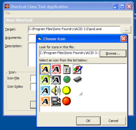

VB5 Shortcut Demonstration (49K)
VB5 Shortcut Demonstration (49K)
 VB6 Shortcut Demonstration (47K)
VB6 Shortcut Demonstration (47K)
 28 Mar 2003
28 Mar 2003
First Posted
 VB IShellLink Interface (ShellLink.tlb)
VB IShellLink Interface (ShellLink.tlb)
 Adding, Deleting and Viewing Recent Documents
Adding, Deleting and Viewing Recent Documents
 IShellFolder Extended Type Library Version 1.2 (ISHF_Ex.Tlb)
IShellFolder Extended Type Library Version 1.2 (ISHF_Ex.Tlb)
 vbAccelerator Icon Selector Control
vbAccelerator Icon Selector Control
 Getting File Icons Using The Shell
Getting File Icons Using The Shell

Creating Shortcuts using VB
This article expands on the cShellLink class provided to allow the shortcuts used in Window's Recent Document Collection to be investigated. It demonstrates how to use the class to read and write shortcuts, including choosing the icon, start up directory and more.
Using the ShellLink Class
A shortcut in Windows has a number of properties, most of which are optional:
- The shortcut's Target
This is the file or Shell object to launch when the shortcut is opened and is the only required property. - The icon to display
There are two ways to specify the icon. Firstly, if nothing is specified, Windows display's the target's default icon. Otherwise, you can specify either a .ICO file or the index of an icon resource within a Windows EXE or DLL. - Target Arguments
Any arguments are passed to the target when it is started, for example, a Shortcut could have a target of Notepad.exe and a arguments containing a file to open. - Working Directory
The directory to change to for the any new process started using the shortcut. - Shortcut Description
The description can be displayed in the Comments column of Explorer's Details view or as an InfoTip when the user hovers over the shortcut. - Open State
This specifies whether to open the object in a normal, minimised or maximised Window. - Hot Key
Specifies a key combination which will open the shortcut from anywhere in Windows. This is typically used with icons on the desktop.
The cShellLink class provided with the download provides a straightforward wrapper around each of these properties. Once you've created an instance of the object, you can use the Resolve method to load an existing shortcut, or just start modifying the properties for a new one. The Target, IconPath and IconIndex, Arguments, WorkingDirectory, Description, DisplayMode and HotKey properties then provide read/write access to the shortcut's details. To get a StdPicture containing the icon, use the Icon property: note that as the icon details are optional, the icon may just be the Shell's icon associated with the target, in which case you can use the File Icon class to get it.
To make the sample more usable, I've included the Icon Picker control for choosing icons for the shortcut.